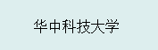
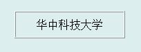

标签控件是最常用的GUI控件之一，可用于显示一行文字或数字。标签的图形显示效果如下：

在Python程序GUI界面中创建一个标签控件的命令为:
hl=dr.DRLabelX(win,x,y,w,h,bg,fg,txt,size)
其中hl是创建时用户设定的变量名。标签控件有4个属性函数，可用于设定其所显示的文字或数字，也可以用于获取其所显示的文字或数字。
hl.setValueSingle(v)
hl.setValueString(txt)
v=hl.getValueSingle()
txt=hl.getValueString()
标签控件是从Tkinter的Label控件继承而来，因此必要时还可以通过Tkinter_Label控件的属性和方法来对其进行装饰。例如，下面语句将已创建的标签控件的边框设为ridge模式。
hl.ax.config(relief='ridge')
显示效果为：

对于Tkinter_Label控件，可以通过configure函数配置的外形参数主要有：
text='标签'
bg='#背景颜色码'
fg='#文本颜色码'
relief='边框的3D样式名'(flat、sunken、raised、groove、ridge、solid)
bd=边框宽度点数
font=('字体名',字体点数)
更多有关Tkinter_Label控件的详细用法请参阅Tkinter文献。
.